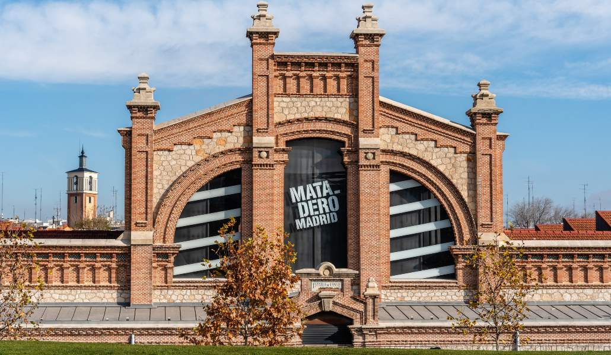
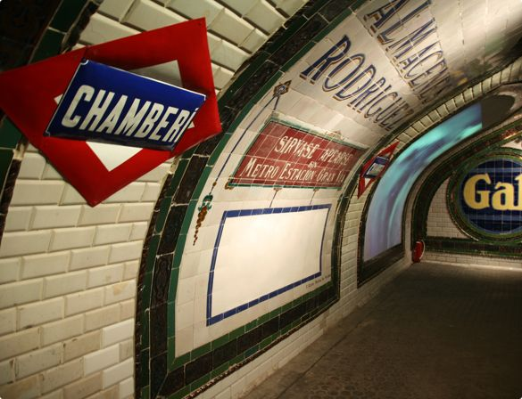
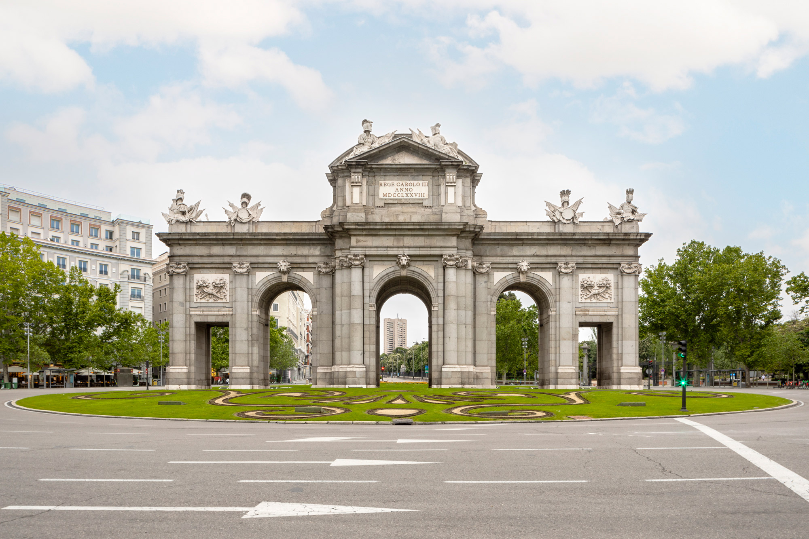
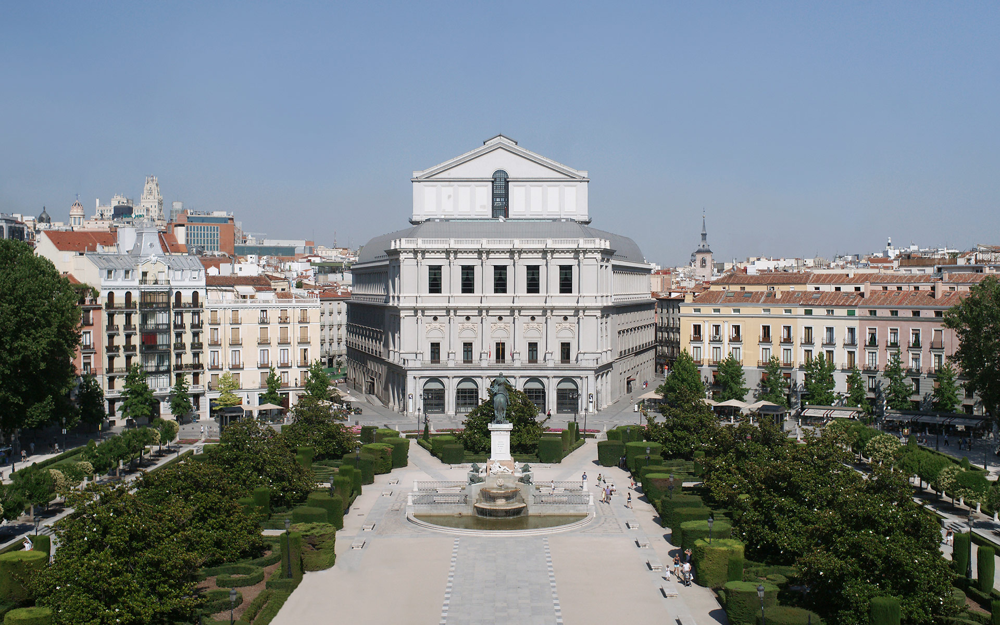
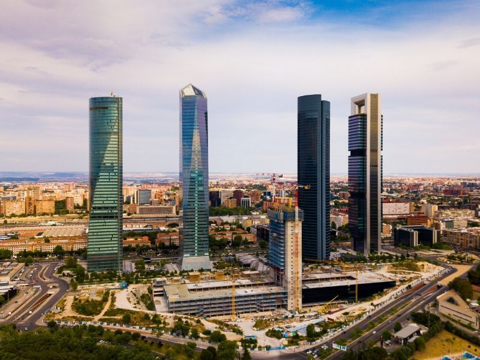
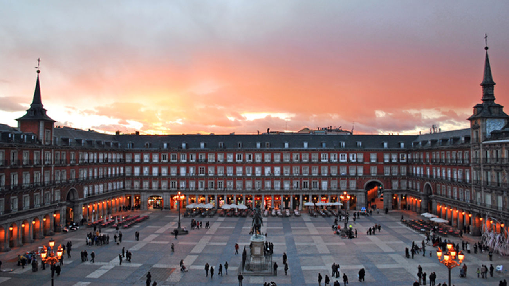

Museos que visitar
Museo Del Prado
- Dirección:
Paseo Prado S/n. - Metro:
Banco de España (Línea 2) - Entrada General:
15€ - Horario:
De lunes a sábado de 10.00 a 20.00h
Domingos y festivos de 10.00 a 19.00h
Museo Reina Sofia
- Dirección:
C/ Santa Isabel, 52. - Metro:
Estación del Arte (Línea 1) - Entrada General:
10€ - Horario:
De Lunes a Sábado: de 10:00 a 21:00 h.
Martes permanece cerrado
Domingo y festivos de 10:00 – 19:00 h
Museo Thyssen
- Dirección:
Palacio de Villahermosa, Paseo del Prado 8. - Metro:
Banco de España (Línea 2) - Entrada General:
12€ - Horario:
Lunes de 12.00 a 16.00, y de martes a domingos de 10.00 a 19.00 horas.
Museo Nacional de Ciencias Naturales
- Dirección:
José Gutiérrez Abascal, 2. - Metro:
Gregorio Marañón, Nuevos Ministerios, Ríos Rosas - Entrada General:
7€ - Horario:
De martes a viernes de 10 a 17 horas
Sábados, domingos y festivos de 10 a 20 horas
Parques que visitar

Otras Visitas Obligatorias

Matadero

Estación Fantasma de Chamberi

Puerta de Alcalá

Teatro Real


Cuatro Torres


Plaza Mayor